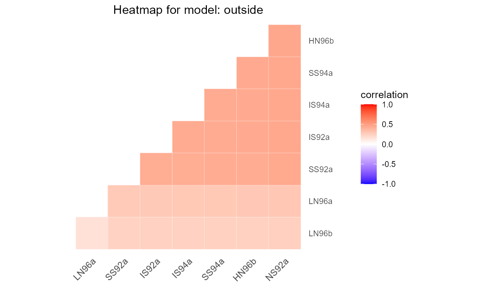

This function selects the best covariance structure for genetic correlations between trials. It fits a range of variance-covariance models (identity, compound symmetry (cs), diagonal, simple correlation with heterogeneous variance (outside), heterogeneous compound symmetry (hcs), first order factor analytic (fa), second order factor analytic (fa2) and unstructured), and selects the best one using a goodness-of-fit criterion. See details for the exact models fitted.
gxeVarCov( TD, trials = names(TD), trait, engine = c("lme4", "asreml"), criterion = c("BIC", "AIC"), ... )
| TD | An object of class |
|---|---|
| trials | A character string specifying the trials to be analyzed. If not supplied, all trials are used in the analysis. |
| trait | A character string specifying the trait to be analyzed. |
| engine | A character string specifying the engine used for modeling. Either "lme4" or "asreml". |
| criterion | A string specifying a goodness-of-fit criterion. Either "AIC" or "BIC". |
| ... | Further arguments to be passed to the modeling engine. |
An object of class varCov, a list object containing:
An object of class STA containing the best fitted model.
A character string indicating the best fitted model.
A data.frame with a summary of the fitted models.
The covariance matrix of the best fitted model.
A character string indicating the goodness-of-fit criterion used for determining the best model, either "AIC" or "BIC".
A character string containing the engine used for the analysis.
A character string containing the trait analyzed.
A data.frame with the full data set used for the analysis.
The models fitted are of the form \(y_{ij} = \mu_j + \epsilon_{ij}\), where \(y_{ij}\) is the phenotypic value of genotype \(i\) in environment \(j\), \(\mu_j\) is the environmental mean, and \(\epsilon_{ij}\) represents mainly genetic variation, although some non-genetic variation may be included as well. The random term \(\epsilon_{ij}\) is modeled in eight ways as described in the table below.
| Model | Description | var(\(g_{ij}\)) | cov(\(g_{ij}\);\(g_{ik}\)) | Number of parameters |
| identity | identity | \(\sigma_G^2\) | 0 | 1 |
| cs | compound symmetry | \(\sigma_G^2 + \sigma_{GE}^2$ | $\sigma_{GE}^2\) | 2 | |
| diagonal | diagonal matrix (heteroscedastic) | \(\sigma_{GE_j}^2\) | 0 | \(J\) |
| hcs | heterogeneous compound symmetry | \(\sigma_G^2+\sigma_{GE_j}^2\) | \(\sigma_G^2\) | \(J+1\) |
| outside | heterogeneity outside | \(\sigma_{G_j}^2\) | \(\theta\) | \(J+1\) |
| fa | first order factor analytic | \(\lambda_{1j}^2+\sigma_{GE_j}^2\) | \(\lambda_{1j}\lambda_{1k}\) | \(2J\) |
| fa2 | second order factor analytic | \(\lambda_{1j}^2+\lambda_{2j}^2+\sigma_{GE_j}^2\) | \(\lambda_{1j}\lambda_{1k}+\lambda_{2j}\lambda_{2k}\) | \(3J-1\) |
| unstructured | unstructured | \(\sigma_{G_j}^2\) | \(\sigma_{G_{j,k}}^2\) | \(J(J+1)/2\) |
In this table \(J\) is the number of environments, \(\sigma_G^2\) the variance component for the genotype main effects, \(\sigma_{GE}^2\) the variance component for GxE interactions. \(\sigma_{G_j}^2\) and \(\sigma_{GE_j}^2\) are the environment specific variance components for the genotype main effects and GxE interaction in environment \(j\). \(\sigma_{G_{j,k}}^2\) is the genetic covariance between environments \(j\) and \(k\). \(\theta\) is the common correlation between environments and \(\lambda_{1j}\) and \(\lambda_{2j}\) are environment specific multiplicative parameters.
If engine = "lme4", only the compound symmetry model can be
fitted.
Other varCov:
fitted.varCov(),
plot.varCov(),
report.varCov(),
residuals.varCov()
## Select the best variance-covariance model using lme4 for modeling. geVarCov <- gxeVarCov(TD = TDMaize, trait = "yld") ## Summarize results. summary(geVarCov)#> Best model: cs, based on BIC. #>#> AIC BIC Deviance NParameters #> cs 21005.28 21016.14 21001.28 2# \donttest{ ## Create a pdf report summarizing the results. report(geVarCov, outfile = tempfile(fileext = ".pdf")) # } # \donttest{ if (requireNamespace("asreml", quietly = TRUE)) { ## Select the best variance-covariance model using asreml for modeling. ## Use BIC as a goodness-of-fit criterion. geVarCov2 <- gxeVarCov(TD = TDMaize, trait = "yld", engine = "asreml", criterion = "BIC") summary(geVarCov2) ## Plot a heatmap of the correlation matrix for the best model. plot(geVarCov2) }#> Best model: outside, based on BIC. #># }